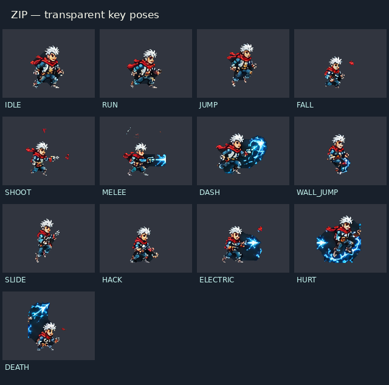
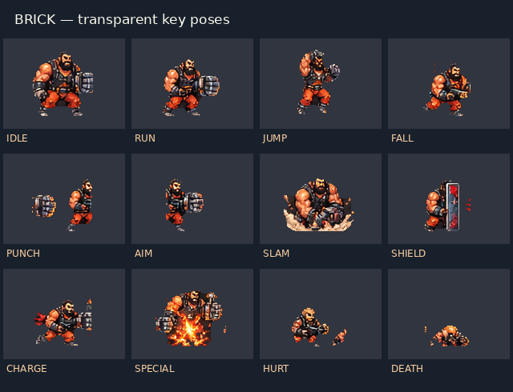

The uploaded artwork is unchanged. This branch is not merged into main. Key poses are usable for testing; professional animation completeness and visual approval are not claimed.
Integration and remaining issues · All 57 named assets · 114 exact Phaser comparisons · Verified files
These are real canvas captures. The cosmetic comparison pauses the scene while hiding/restoring the backdrop; player state is unchanged. Every restored frame is pixel-identical to its normal counterpart. The video below runs continuously with normal keyboard input.
Download MP4 · Uncut WebM · Combat/rescue events and render count
The game renders these complete frames at 1× with measured foot/body anchors. There are no invented in-betweens. Some source poses contain cropped anatomy, detached equipment or stray fragments; the renderer preserves them exactly. The isolated Phaser test checks every frame in both directions against these original pixels.


Remaining art work: consistent running/attacking in-betweens, genuine land/revive/death cycles, guard animation, BRICK’s broken punch anatomy, and removal of stray source fragments. No generic replacement artwork was generated.